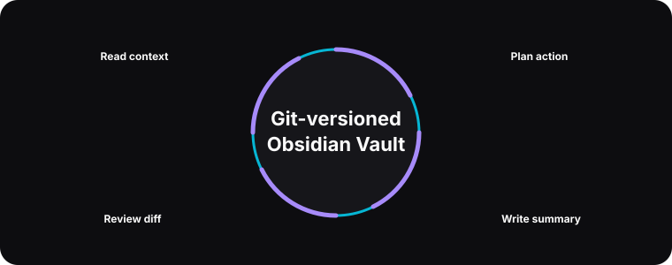

Second Brain · Obsidian + AI agents
Plain Markdown memory that humans and agents can both inspect.

Why Markdown memory
Persistent memory is only useful if I trust it. I chose an Obsidian-style Markdown vault because it is readable, easy to diff, easy to back up, and usable without the agent. If the system writes a note, I can open the note in a normal editor and decide whether it belongs there.
This matters because agent memory can drift. A model may summarize too aggressively, preserve the wrong detail, or turn a temporary preference into a permanent rule. Git history gives me an audit trail, and Markdown keeps the state legible.
Shape of the vault
The public concept is simple: a few high-level memory files, a directives folder, and project notes. I avoid embedding private content in this showcase, but the pattern is generic enough to explain. A top-level memory note captures stable facts. A user note captures preferences. Project notes keep task-specific context. Directives document behavior the system should follow.
The agent does not need to read everything every time. It should retrieve the smallest useful context, write the smallest useful update, and leave enough structure that a future run can understand why the note exists.
# illustrative
def append_project_note(project, summary, decisions):
note = vault.open(f"projects/{project}.md")
note.add_heading(today())
note.add_list("Decisions", decisions)
note.add_paragraph(summary)
return vault.stage(note.path)Human review
I treat memory writes like code changes. The system can propose and stage notes, but the interesting question is whether the note helps future work. A concise decision log is more valuable than a long transcript. A clear project summary is more valuable than a pile of raw chat.
This forced me to think about memory as an interface. The reader may be the agent tomorrow, but it may also be me six months from now. The writing style has to serve both.
The review step also protects privacy. A personal assistant sees messy context: half-formed plans, private reminders, and temporary thoughts. Not everything deserves to become durable memory. By keeping memory in files and reviewing changes, I can separate useful long-term context from noise that should expire with the session.
That has changed how I write prompts for memory tasks. I ask for compact summaries, explicit decisions, open questions, and links back to the relevant project note. The result is less magical but more useful. The vault becomes a working notebook the agent can help maintain, not an opaque personality database.
What I learned
Durable memory needs friction. If every passing thought becomes permanent, the vault gets noisy and the agent becomes less grounded. The useful loop is read, act, summarize, review, and commit. That loop gives the system memory without surrendering judgment.
The deeper lesson is that memory should be designed around retrieval. A beautiful note that never gets found is not useful to the agent. I now think about headings, filenames, and summaries as part of the runtime interface. The vault is documentation, but it is also an API made of plain text.
I also learned to keep personal memory separate from public storytelling. This showcase describes the architecture and the file pattern, but it does not expose the actual vault. That boundary is part of the engineering work, and it is one reason the public examples stay deliberately generic, inspectable, and safe for a public portfolio.